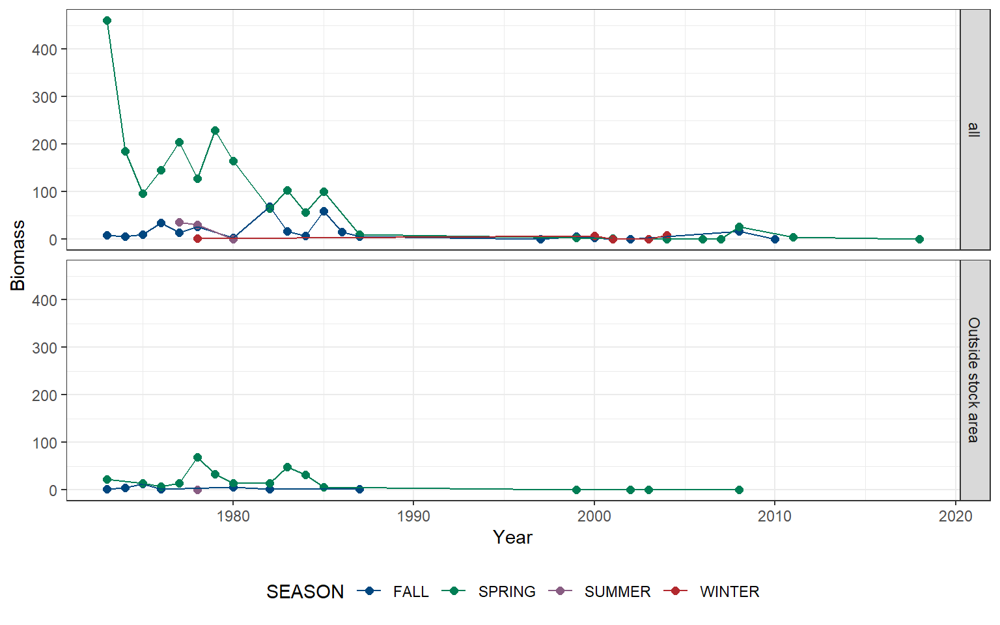
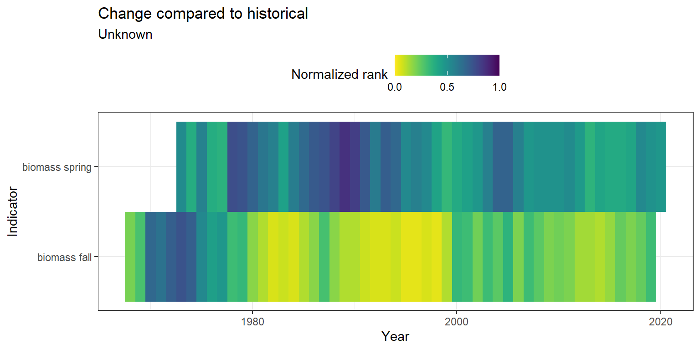
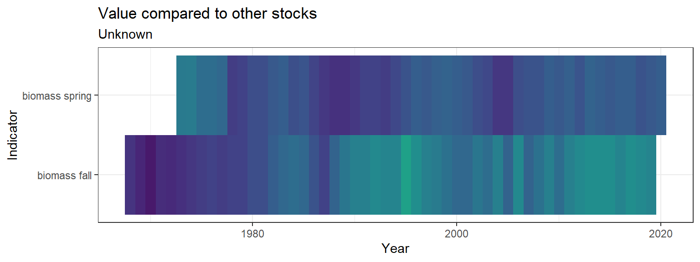
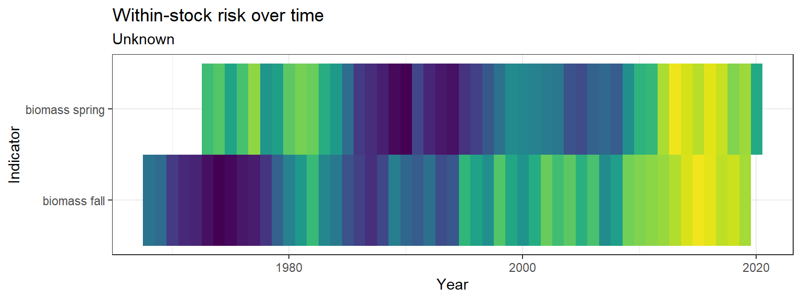
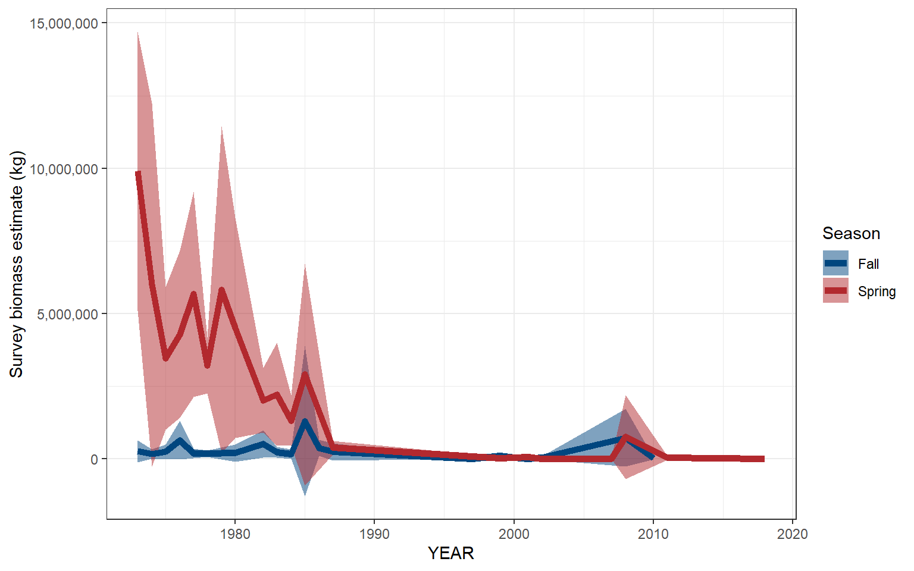

4.2 Biomass
Biomass data were pulled from survdat.
4.2.1 Figures
Separate geom_gls() functions were fit for fall and spring measurements; trend lines are only shown when the trend was statistically significant, so some plots may have fewer than two trend lines. Fall has solid trend lines, and spring has dashed trend lines. Please note, sometimes the survey observed a small number of fish outside of the defined stock area.
4.2.1.1 Survey biomass (raw measurements)

Figure 4.4: Alewife
Risk
See Methods for risk calculation details.
Rank of change compared to historical, ranked among stocks

Figure 4.5: Alewife
Rank of value (magnitude) compared to other stocks

Figure 4.6: Alewife
Rank of value (magnitude) within a single stock, compared to all years

Figure 4.7: Alewife
4.2.1.2 Survey biomass (swept area estimates)
Please note, these estimates are not parsed by region. Swept area estimates are based on spring and fall surveys only. The shaded gray region indicates +/- two standard errors.

(#fig:bio_survey_swept)Alewife
4.2.1.3 Assessment biomass
## [1] "NO DATA"Risk
See Methods for risk calculation details.
Rank of change compared to historical, ranked among stocks
## [1] "No Unknown data"Rank of value (magnitude) compared to other stocks
## [1] "No Unknown data"Rank of value (magnitude) within a single stock, compared to all years
## [1] "NO Unknown DATA"4.2.2 Survey summary
(#fig:biomass_summary)Alewife
4.2.3 Data
4.2.3.1 Survey data (raw measurements)
(#fig:biomass_data)Alewife
4.2.3.2 Survey data (swept area estimates)
(#fig:swept_biomass_data)Alewife
4.2.3.3 Assessment data
## [1] "NO DATA"